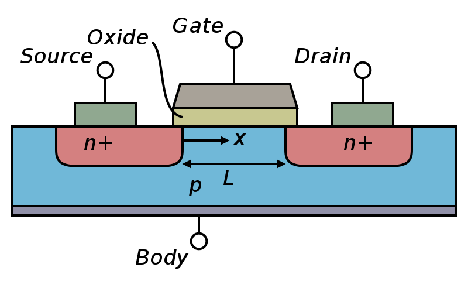

The transistor is the most important electronic component for electronics and computers. It forms the basis of almost all logic operations on data and is also used for storing data (for example, in SRAM memories).
A transistor is basically a 3 (or sometimes 4) terminal device that acts as an electronic switch. It has an input, output and a control terminal. It acts as a switch, so that in one "position" no electric current can flow from input to output terminals and in the other "position" a current can freely flow from input to output. The "position" of the switch is actually determined by the voltage (i.e. charge) applied on the control terminal.
The typical implementation of a transistor for computer and logic operations is the so-called MOSFET transistor (Metal Oxide Semiconductor Field Effect Transistor). These are using the properties of semiconductor materials to implement the switch behavior by stacking 3 different materials:
This stack of materials gives part of the name to the transistor (the MOS part).

The three terminals of a MOSFET transistor are usually called the Drain and Source (for input/output terminals) and the Gate terminal, that acts as the switch control. When a given voltage (which value is given by transistor intrisic characteristics) is applied on the gate, the Source/Drain connection becomes like a wire. The fourth connection on the image above (Body) is not necessary in most of the cases and is usually wired to the source. The n+ and p corresponds to the doping type of the semiconductor, which will determine the type of the transistor (see below MOSFET types).
There exists two main types of MOSFET transistors that we call n-type and p-type MOSFETs. Without going into the details of why we call them like this, the main difference is that a n-type MOSFET will let the current flow from Drain to Source only when a positive voltage is applied on its gate. The p-type will do so only when a negative voltage is applied on its gate (with respect to the source terminal voltage).
In electronics we usually represent devices with symbols. Here are the symbols for the nMOSFET and pMOSFET transistors.
The p and n letters corresponds to the doping of the semiconductor, such as Silicon, used for these devices. Implanting atoms that have more electrons (n type) or less electrons (p type) than Silicon allows to modify the electrical properties of the semiconductor. See the Wikipedia article on semiconductor doping and the Wikipedia article on MOSFETs for more information.